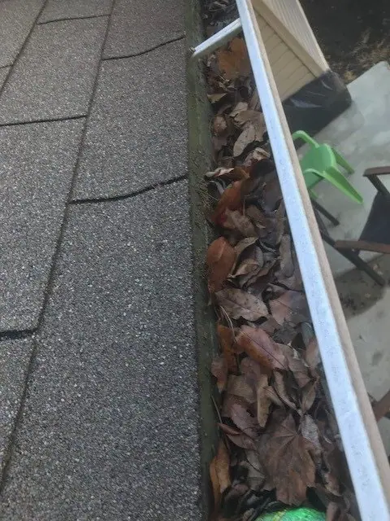

Ocean County & Monmouth County · NJ
Gutter Services
Competitive Pricing | Free Consultations and Estimates | Family-Owned & Operated
Cleaning · Installs · Repairs · Gutter Guards
◈ Certified Dryer Exhaust Technician⌂ NJ LIC# 13VH1031470★ 4.9 from 288 reviews

Gutter Cleaning — Prevent Rainwater Damage
Standing water can cause significant property damage, especially in hard-to-reach areas like your gutters. Routine gutter and downspout cleaning can prevent water from ruining your siding and weakening your foundation — but what a messy job!
If you don't want to keep up with this dirty, time-consuming chore or don't want to risk your safety on a high ladder, outsource the project to the seasoned pros at Affordable Dryer Vent & Gutter Cleaning!
- Prevents mold growth and pest infestations
- Frees up your time for enjoyable activities
- Extends the service life of your gutters
- Prevents leaks and water damage
Gutter Installs and Repairs
Let Us Make Your Property a Regular Cleaning Stop
We'll stop by as often as needed to remove leaves and debris, which offers several benefits to you and your home or business.
Compare the difference
Drag the sliders to compare real gutters and gutter guards from the photo collection.
Clogged gutter / clean gutter

↔
BEFOREAFTERIllustrative comparison; images are from different jobs.
Open gutter / gutter guards

↔
BEFOREAFTERIllustrative comparison; images are from different jobs.

Gutter Guards Help Keep Debris Out of Your System
When we install guards over the top of your gutters, the twigs, leaf matter, shingle grit, and other bits of debris that get into your system will drop significantly. Clean gutters keep rainwater and melting ice flowing freely, which helps protect your roof, siding, and foundation from water damage.
Explore gutter products →“They went above and beyond cleaning my gutters! They cleaned my back patio and my front porch too! This is the second time I have used this company and I will be using them again in the future.”
— Jill SheaAvailable Daily for All Your Gutter Needs
Call or text us at (732) 966-6914!